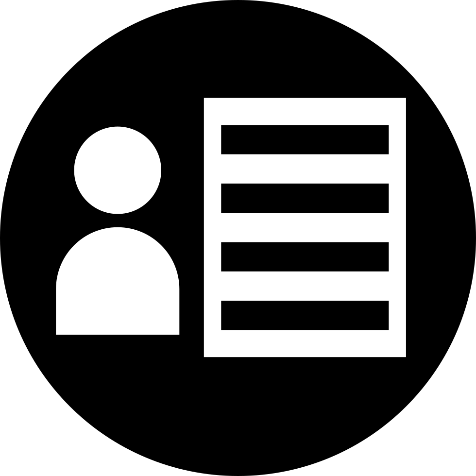
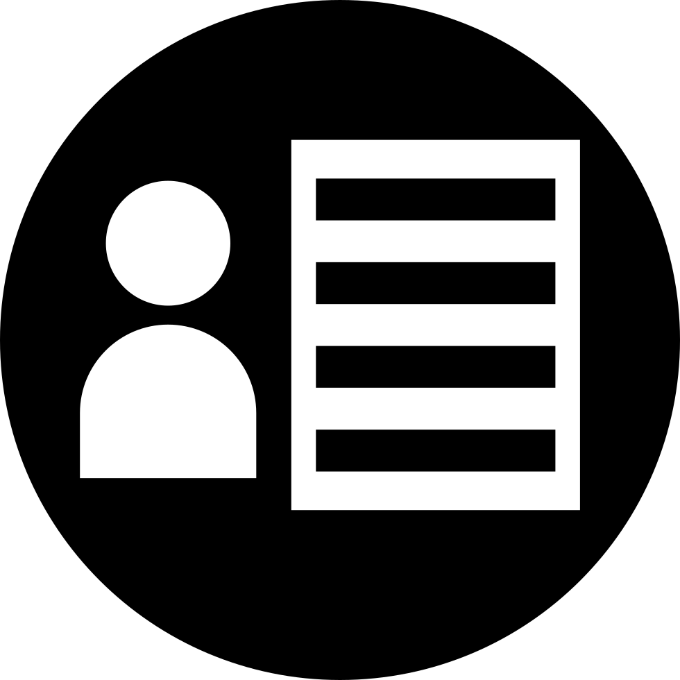

Naba Rizvi.
/nub-buh riz-vee/ noun.
A first-generation student livin' the ADHDream, graduating in May 2020.
Synonyms: Technically Confident

Credit: Claire (Qin) Li,
Adobe Research
HCI researcher, community organizer, & blogger.
I have a passion for breaking barriers in healthcare, education, & accessibility. I have won 5 hackathons, launched an NSF accelerated EdTech startup to teach computer science to non-English speaking youth, and founded the ACM-W chapter at UT which received the Outstanding New Student Organization award under my leadership. I've received competitive scholarships from Google, Adobe, and Palantir recognizing my technical contributions & commitment to increasing diversity in tech.
My research interests include: human-computer interaction, natural language processing, accessibility, and computer science education. In 2019, I interned at Adobe Research's NLP group under the supervision of Franck Dernoncourt, publishing a first-author paper on my project Margin Call, an accessible web-based text summarizer for blind users in INLG 2019.
I'm currently conducting research to improve the kidney transplant matching process at the IDEAS Lab and growing my organization, Non-Traditional Techies. With 800+ members, NTT offers resources such as job postings, scholarships, conferences, a safe space, and a mentorship program to help underrepresented minorities break into tech.
Publications
Margin Call: an Accessible Web-based Text Viewer with Generated Paragraph Summaries in the Margin 
